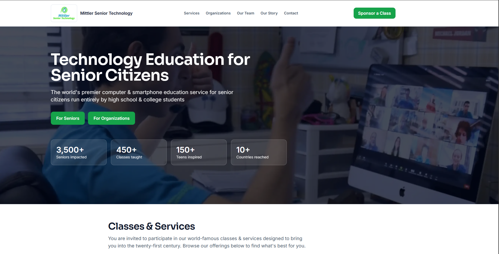

Case Study
Mittler Senior Technology achieved a 98.1% energy reduction
From an F rating to a B rating, this transformation shows how digital sustainability can cut emissions, energy use, and water consumption at scale.
Custom web development
For Mittler Senior Technology, we reworked the website structure and front-end experience to create a cleaner, lighter, and more efficient digital build aligned with both usability and sustainability goals.
Accessibility audits
We reviewed the Mittler site for accessibility-related issues and helped shape improvements that supported clearer navigation, better readability, and a more inclusive experience across devices.
Sustainability audits
We measured the environmental footprint of Mittler Senior Technology’s website and identified the technical changes that contributed to major reductions in carbon emissions, energy use, and water consumption.
Performance optimization
For this case study, we improved load efficiency and reduced unnecessary weight across the site, helping move Mittler Senior Technology from a much heavier setup to a faster and more technically efficient website.
SEO and digital visibility
Alongside performance and structural improvements, this work strengthened the technical foundation of the Mittler Senior Technology site, supporting better discoverability, indexing, and overall digital visibility.
Measured reductions
Proven environmental improvements
The Mittler Senior Technology website redesign delivered major measurable reductions across carbon emissions, energy use, and water consumption.
98.2%
Energy reduction
Energy use per visit fell from 0.0139 kWh to 0.0002 kWh through a more efficient website build.
98.1%
Carbon reduction
CO₂ per page visit dropped from 5.31g to 0.10g, dramatically lowering the website’s environmental impact.
98.1%
Water reduction
Water consumption per visit decreased from 2.95L to 0.06L, showing the wider resource savings of optimization.
Before & After Audit
A simpler view of the transformation
Compare the website before and after Oasis of Change’s redesign to see how efficiency and sustainability improved.
A heavier, less efficient website
The earlier version required more energy, produced more emissions, and used more supporting resources per page visit.
Why it mattered
Dirtier than 98% of web pages globally
Carbon per visit
5.31g CO₂
Energy per visit
0.0139 kWh
Water per visit
2.95L
Carbon rating
F rating
Among the worst-performing pages measured
Based on Website Carbon Calculator measurements comparing the previous and redesigned versions of mittlerseniortech.com.
Key learning
Even though the website was already using “green” hosting, it was still not sustainable. Large images, unnecessary code, and heavy page files meant it used far more energy, water, and carbon emissions than needed.
Before & After Audit
A visual look at the redesign
Drag the slider to compare the previous Mittler Senior Technology website with the redesigned version by Oasis of Change.

Impact Equivalents at 100,000 Annual Page Views
What those reductions look like in real-world terms
These figures show how the website’s measured reductions in carbon emissions and energy use translate into broader real-world impact. 1
CO₂ equivalent
98.1% lowerBefore
6,369.6 kg
Grade F
After
119.7 kg
Grade B
Energy consumed
98.2% lowerBefore
16,620 kWh
Higher electricity demand
After
300 kWh
Much lighter site build
Tea-boiling equivalent
98.1% lowerBefore
863,090
cups equivalent
After
16,220
cups equivalent
Smartphone charging equivalent
98.2% lowerBefore
1,385,180
equivalent charges
After
24,730
equivalent charges
Trees needed to absorb the emissions
At 100,000 annual page views
Before
290
trees needed
After
10
trees needed
Key takeaway
At 100,000 annual page views, Mittler Senior Technology went from producing over 6.3 tonnes of CO₂ to about 120 kg, and from needing 290 trees to absorb that impact down to just 10 trees.
1. Notes
Core figures such as CO₂ equivalent and energy consumed reflect the primary environmental results. Other figures, including tea-boiling equivalent, smartphone charging equivalent, and trees needed, are illustrative conversions based on Website Carbon’s methodology and are included to help make the scale of impact easier to understand.

Building a more sustainable digital future through energy-efficient websites, transparent impact, and technology that supports communities and the planet.
© 2026 Oasis of Change, Inc. All rights reserved.